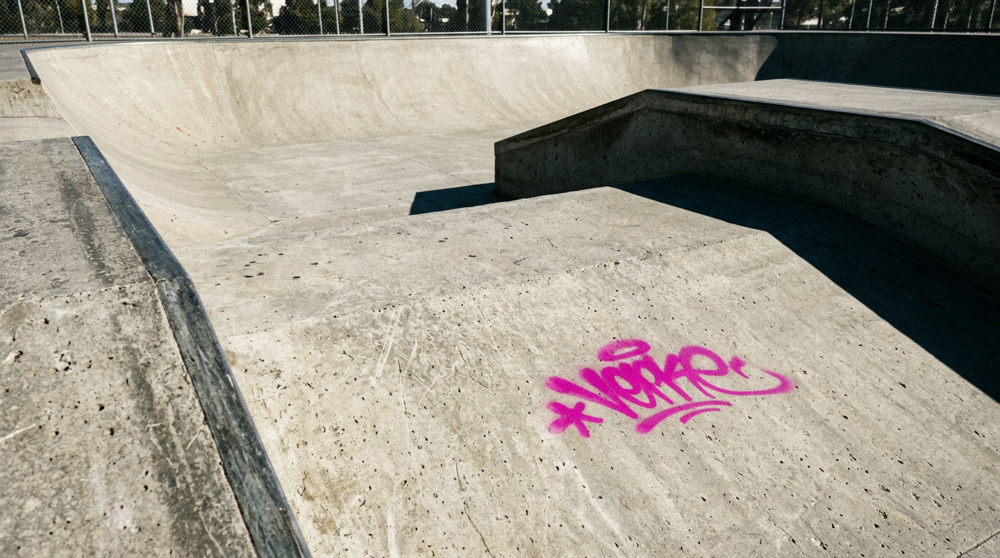
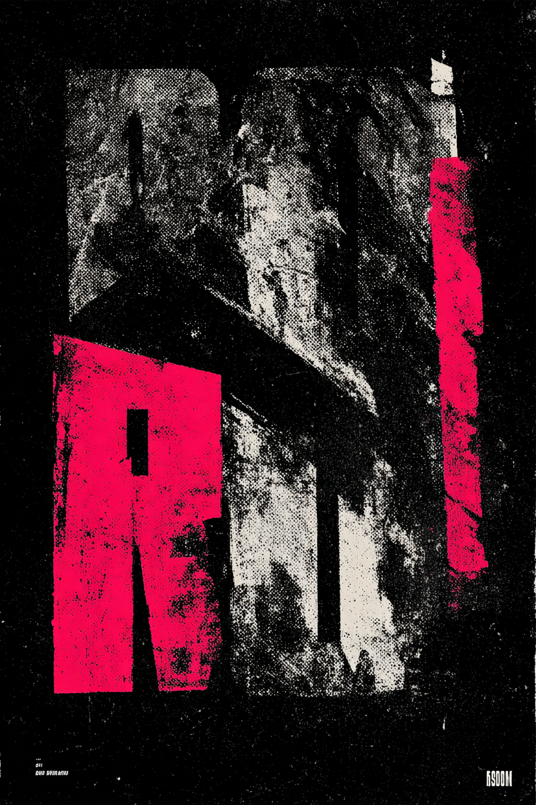
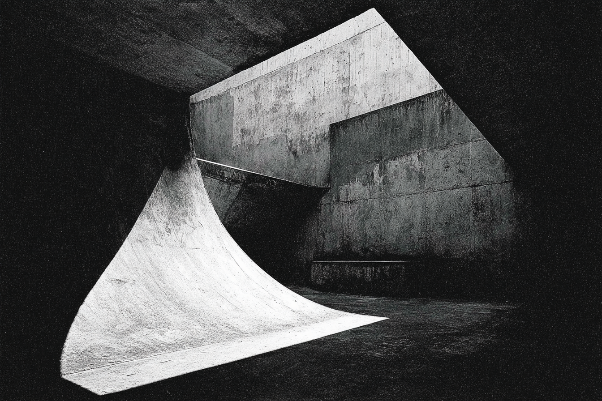

02 — Quem é
A ordem
e o caos.
A fluidez
e o impacto.
Uma empresa de construção de skateparks fundada, projetada e executada por skatistas. Do CAD ao concreto, sem intermediários entre o projeto e a pista.
O projeto de linhas perfeitas que transpira a imperfeição da rua.
(Skate × Arte)
+ (Punk × Anarquia)
+ (Arquitetura × Rua)
= Visão criativa das pistas da Concave
A rua como referência, não como decoração. Pisos diferentes, cotas inesperadas, obstáculos que remetem à cidade real. As pistas da Concave traduzem a lógica orgânica da rua, a fluidez de uma linha de manobras que brota na sua frente, igual quando andando pela cidade.
De skatista para skatista — com respeito pelo skate. Dos fundadores aos construtores, todos andam de skate. O amor real é o filtro pelo qual cada decisão técnica passa.
08 — Textura · Processo e Uso
Concreto que recebeu grind

Spray escorrido · stencil no muro

Xerox de zine · grão alto

Concreto desformado · processo visível
—
Concreto que recebeu um grind — polido pelo uso, não pelo acabamento. O desgaste real como acabamento.
—
Asfalto que comeu roda — desgaste real, não simulado. A rua como ela é.
—
Spray escorrido do stencil — borda irregular, tinta que não pediu licença. O fazer visível.
—
Xerox de zine — grão alto, contraste brutal, reprodução que degrada com orgulho.
!
Restrição: não é sujo por estética. É sujo porque a rua é assim. A diferença é intenção versus pastiche.